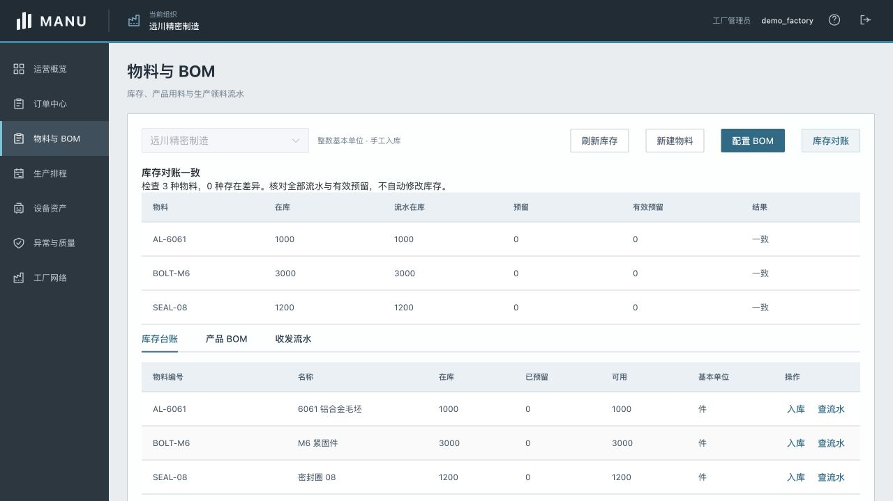

订单与物料事务
结合订单专属BOM快照、有序行锁与整单事务，保持物料需求稳定，并在库存不足时回滚预留。
2024.07
从订单查看物料需求、库存预留和收发流水，定位缺料或账实不符的环节。
结合订单专属BOM快照、有序行锁与整单事务，保持物料需求稳定，并在库存不足时回滚预留。
在同一事务内核对库存余额、流水记录与有效预留；使用请求ID实现幂等收货。MySQL 部署测试验证了并发超卖防护、缺料回滚及库存流水一致性。
本地演示基于预置的虚构工厂数据，可查看库存余额、收发流水与有效预留。

围绕业务约束组织测试，检查整单操作及重复请求后的数据库状态。
| 场景 | 验证约束 | 测试模块 |
|---|---|---|
| 整单物料预留 | 缺少任一种物料时，订单不留下部分预留 | WorkflowTests.java |
| 并发库存操作 | 库存下限与有效预留保持一致 | WorkflowTests.java |
| 重复收货请求 | 请求ID对应同一收货结果 | WorkflowTests.java |
| 库存对账 | 余额、流水和预留对应同一事务 | WorkflowTests.java |
| 订单状态流转 | 接单、生产、异常和交付约束 | WorkflowTests.java |
| 数据升级与演示账号 | 迁移及受限演示入口 | MigrationTests.java / DemoAccountsTests.java |